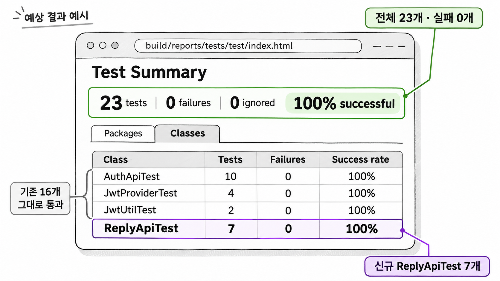

9장. 구현과 수렴이란?
1. implement — 작업 단위 구현
1.1 /speckit-implement와 체크 표시
/speckit-implement는 에이전트가 tasks.md의 작업을 위에서부터 차례로 처리하며 코드를 쓰게 하는 명령입니다. 8장까지는 문서만 만들었습니다. 프로젝트의 자바 코드는 이 명령에서 처음 바뀝니다. 에이전트는 작업 하나를 끝낼 때마다 tasks.md의 해당 줄을 - [ ]에서 - [X]로 고칩니다. 이 표시를 체크 표시라고 부릅니다.
명령을 실행하면 에이전트는 코드를 쓰기 전에 몇 가지를 먼저 확인합니다. tasks.md가 있는지 보고, 기능 폴더에 checklists 폴더가 있으면 점검표에 체크하지 않은 항목이 남았는지도 봅니다. 남은 항목이 있으면 그대로 진행할지 묻습니다. 7장에서 만든 점검표의 항목을 모두 확인했다면 이 질문은 나오지 않습니다.
예제 9-1 — 댓글 기능 구현하기
파일명: 없음(Claude Code 대화창에 입력)
Claude Code 대화창에 입력합니다.
/speckit-implement실행 결과
에이전트는 파일을 만들 때마다 1장에서 본 파일 수정 승인을 요청합니다. T007에서 .\gradlew test를 실행할 때는 명령 실행 승인을 요청합니다. 승인하기 전에는 대상 파일이 plan.md의 구조에 적힌 파일인지 확인합니다. 모든 작업이 끝나면 tasks.md는 다음 상태가 됩니다.
## 1단계: 데이터
- [X] T001 BoardRepository 추가
- [X] T002 ReplyRepository 추가 (글 번호로 댓글 목록 조회)
## 2단계: 서비스
- [X] T003 ReplyRequest.SaveDTO, ReplyResponse.DTO 추가
- [X] T004 ReplyService 에 댓글쓰기, 댓글목록, 댓글삭제와 권한 검사 구현
## 3단계: API
- [X] T005 ReplyController 추가
- [X] T006 ReplyApiTest 작성 (목록 조회, 쓰기 성공, 비로그인 쓰기 거부, 100자 초과 거부,
남의 댓글 삭제 거부, 자기 댓글 삭제, 글 작성자의 댓글 삭제)
- [X] T007 전체 테스트 실행. 기존 테스트 16개 포함 모두 통과 확인T006의 괄호 안 내용은 8장 4.2에서 analyze 보고서를 읽고 고친 문장 그대로입니다. 에이전트는 이 문장을 읽고 테스트를 만듭니다. 8장에서 바로잡지 않았다면 100자 초과 테스트와 글 작성자의 삭제 테스트는 만들어지지 않았을 것입니다.
1.2 체크 표시가 파일에 남는 이유
1장 4절에서 본 것처럼 대화가 길어지면 앞부분이 압축되고, 새 대화를 시작하면 이전 대화는 컨텍스트에 남지 않습니다. 구현은 파일을 여러 개 만들고 테스트까지 돌리므로 대화가 가장 길어지는 단계입니다. 진행 상황을 대화에만 두면 어디까지 했는지 잃어버리기 쉽습니다.
체크 표시는 tasks.md 파일에 남습니다. 대화가 끊겨도 에이전트는 tasks.md를 다시 읽고 체크되지 않은 첫 작업부터 이어 갈 수 있습니다. 2장에서 정한 해결 방향인 "결정을 파일에 적기"가 진행 상황에도 그대로 적용된 것입니다.
예제 9-2 — 끊긴 구현 이어 가기
파일명: 없음(Claude Code 대화창에 입력)
T003까지 끝난 뒤 대화가 너무 길어져 새 대화를 시작한다고 합시다. 대화창에 차례로 입력합니다.
/clear/speckit-implement실행 결과
에이전트가 tasks.md를 읽고 T001~T003에 체크 표시가 있음을 확인한 뒤 T004부터 작업을 시작합니다. 앞 대화의 내용을 다시 설명하지 않아도 됩니다.
다만 체크 표시는 에이전트가 "끝냈다"고 적은 기록일 뿐, 작업이 빠짐없이 됐다는 증거는 아닙니다. 체크한 작업에 빠진 부분이 있는지는 3절의 리뷰와 4절의 converge가 확인합니다.
2. 생성된 코드 읽기
예제 9-1이 만든 코드를 작업 번호 순서대로 읽습니다. 예제 9-3부터 9-7까지는 5장에서 연 블로그 API 시작 코드에 차례로 더해지는 파일입니다. 파일마다 그 코드가 스펙 · 계획 · 헌법의 어느 문장에서 나왔는지 함께 짚습니다.
2.1 리포지토리 — BoardRepository · ReplyRepository
6장 2.3에서 확인했듯 시작 코드에는 Reply 엔티티가 있지만 BoardRepository는 없습니다. 댓글을 쓰려면 글이 있는지부터 확인해야 하므로, plan.md는 BoardRepository 추가를 첫 작업으로 잡았습니다.
예제 9-3 — 리포지토리 두 개 추가하기(T001 · T002)
파일명: src/main/java/com/newtenco/blog/board/BoardRepository.java
package com.newtenco.blog.board;
import org.springframework.data.jpa.repository.JpaRepository;
public interface BoardRepository extends JpaRepository<Board, Integer> {
}파일명: src/main/java/com/newtenco/blog/reply/ReplyRepository.java
package com.newtenco.blog.reply;
import org.springframework.data.jpa.repository.JpaRepository;
import org.springframework.data.jpa.repository.Query;
import org.springframework.data.repository.query.Param;
import java.util.List;
public interface ReplyRepository extends JpaRepository<Reply, Integer> {
// 댓글과 작성자를 한 번의 쿼리로 가져온다 (join fetch 로 N+1 문제 방지)
@Query("select r from Reply r join fetch r.user where r.board.id = :boardId order by r.id")
List<Reply> findAllByBoardId(@Param("boardId") Integer boardId);
}BoardRepository는 기존 Board 엔티티를 그대로 씁니다. 새 엔티티를 만들지 않았으므로 헌법 5조의 "같은 역할의 클래스를 새로 만들지 않는다"를 지켰습니다.
ReplyRepository의 쿼리에서는 두 곳을 봅니다. 첫째, join fetch r.user는 응답에 작성자 이름을 넣을 때 댓글마다 사용자 조회 쿼리가 따로 나가지 않게 합니다. 둘째, order by r.id는 새 댓글이 목록 맨 뒤에 오게 합니다. 스펙 시나리오 1의 "목록 맨 뒤에 추가된다"가 이 정렬 조건으로 옮겨졌습니다.
2.2 요청 · 응답 record
헌법 3조는 엔티티를 요청 본문이나 응답 본문에 직접 쓰지 말고, 도메인별 Request · Response 클래스 안의 record로 정의하라고 정했습니다. T003은 이 조항대로 두 클래스를 만듭니다.
예제 9-4 — 요청 · 응답 record 추가하기(T003)
이어서: 예제 9-3
파일명: src/main/java/com/newtenco/blog/reply/ReplyRequest.java
package com.newtenco.blog.reply;
import com.newtenco.blog.board.Board;
import com.newtenco.blog.user.User;
import jakarta.validation.constraints.NotBlank;
import jakarta.validation.constraints.Size;
public class ReplyRequest {
public record SaveDTO(
@NotBlank(message = "댓글 내용을 입력해주세요")
@Size(max = 100, message = "댓글은 100자 이하여야 합니다")
String comment) {
// DTO -> Entity 변환
public Reply toEntity(User user, Board board) {
return Reply.builder()
.comment(comment)
.user(user)
.board(board)
.build();
}
}
}파일명: src/main/java/com/newtenco/blog/reply/ReplyResponse.java
package com.newtenco.blog.reply;
public class ReplyResponse {
// 댓글 응답 (엔티티를 그대로 내보내지 않는다)
public record DTO(Integer id, String comment, Integer userId, String username) {
public DTO(Reply reply) {
this(reply.getId(), reply.getComment(),
reply.getUser().getId(), reply.getUser().getUsername());
}
}
}7장 3절의 clarify에서 확정한 "1자 이상 100자 이하"가 @NotBlank와 @Size(max = 100)으로 옮겨졌습니다. 100이라는 숫자는 기존 reply_tb의 comment 컬럼 길이와도 같습니다. 그래서 검증을 통과한 댓글은 데이터베이스에 저장할 때 길이 문제로 실패하지 않습니다.
엔티티 변환은 SaveDTO의 toEntity()가, 응답 변환은 DTO의 생성자가 맡습니다. 8장 2.3에서 MapStruct 같은 변환 라이브러리를 막아 두었기 때문에 변환 코드가 record 안에 들어갔습니다. 응답 DTO에는 사용자의 id와 username만 담기므로 User 엔티티의 비밀번호 같은 필드는 응답에 나갈 수 없습니다.
2.3 ReplyService와 권한 검사
스펙에서 가장 까다로운 요구는 삭제 권한이었습니다. 시나리오 3은 "자기 댓글만 삭제할 수 있다", 시나리오 4는 "글 작성자는 자기 글에 달린 댓글을 모두 삭제할 수 있다"입니다. T004의 ReplyService가 이 두 문장을 코드로 옮깁니다.
예제 9-5 — 댓글 서비스 추가하기(T004)
이어서: 예제 9-4
파일명: src/main/java/com/newtenco/blog/reply/ReplyService.java
package com.newtenco.blog.reply;
import com.newtenco.blog.board.Board;
import com.newtenco.blog.board.BoardRepository;
import com.newtenco.blog.core.handler.errors.ForbiddenException;
import com.newtenco.blog.core.handler.errors.NotFoundException;
import com.newtenco.blog.user.User;
import lombok.RequiredArgsConstructor;
import org.springframework.stereotype.Service;
import org.springframework.transaction.annotation.Transactional;
import java.util.List;
@Transactional(readOnly = true)
@RequiredArgsConstructor
@Service
public class ReplyService {
private final ReplyRepository replyRepository;
private final BoardRepository boardRepository;
@Transactional
public ReplyResponse.DTO 댓글쓰기(Integer boardId, ReplyRequest.SaveDTO reqDTO, User sessionUser) {
Board board = boardRepository.findById(boardId)
.orElseThrow(() -> new NotFoundException("게시글을 찾을 수 없습니다"));
Reply savedReply = replyRepository.save(reqDTO.toEntity(sessionUser, board));
return new ReplyResponse.DTO(savedReply);
}
public List<ReplyResponse.DTO> 댓글목록(Integer boardId) {
if (!boardRepository.existsById(boardId)) {
throw new NotFoundException("게시글을 찾을 수 없습니다");
}
return replyRepository.findAllByBoardId(boardId).stream()
.map(ReplyResponse.DTO::new)
.toList();
}
@Transactional
public void 댓글삭제(Integer replyId, User sessionUser) {
Reply reply = replyRepository.findById(replyId)
.orElseThrow(() -> new NotFoundException("댓글을 찾을 수 없습니다"));
// 삭제할 수 있는 사람: 댓글 작성자 또는 그 글의 작성자
boolean isReplyOwner = reply.getUser().getId().equals(sessionUser.getId());
boolean isBoardOwner = reply.getBoard().getUser().getId().equals(sessionUser.getId());
if (!isReplyOwner && !isBoardOwner) {
throw new ForbiddenException("댓글을 삭제할 권한이 없습니다");
}
replyRepository.delete(reply);
}
}댓글삭제()의 boolean 변수 두 개가 시나리오 3과 4에 하나씩 대응합니다. isReplyOwner는 시나리오 3을, isBoardOwner는 시나리오 4를 옮긴 것입니다. 둘 다 거짓일 때만 거부하므로 둘 중 하나만 참이어도 삭제됩니다. 리뷰할 때 이렇게 스펙 문장과 코드 줄을 짝지어 보면 빠진 요구를 찾기 쉽습니다.
서비스는 글이나 댓글이 없으면 NotFoundException을, 권한이 없으면 ForbiddenException을 던지기만 하고 응답은 만들지 않습니다. 두 예외는 시작 코드의 core.handler.errors 패키지에 이미 있던 클래스이고, 응답은 GlobalExceptionHandler가 만듭니다. 헌법 2조와 plan.md의 헌법 점검에 적은 내용이 그대로 코드가 되었습니다.
2.4 ReplyController
컨트롤러는 주소와 서비스 메서드를 잇는 일만 합니다. 누가 어떤 주소를 부를 수 있는지는 기존 SecurityConfig가 정하고, 누가 어떤 댓글을 지울 수 있는지는 서비스가 정합니다.
예제 9-6 — 댓글 컨트롤러 추가하기(T005)
이어서: 예제 9-5
파일명: src/main/java/com/newtenco/blog/reply/ReplyController.java
package com.newtenco.blog.reply;
import com.newtenco.blog.core.util.Resp;
import com.newtenco.blog.user.User;
import jakarta.validation.Valid;
import lombok.RequiredArgsConstructor;
import org.springframework.http.ResponseEntity;
import org.springframework.security.core.annotation.AuthenticationPrincipal;
import org.springframework.web.bind.annotation.*;
@RequiredArgsConstructor
@RestController
public class ReplyController {
private final ReplyService replyService;
// 댓글 목록: 로그인하지 않아도 볼 수 있다 (SecurityConfig 의 GET /api/boards/** 규칙)
@GetMapping("/api/boards/{boardId}/replies")
public ResponseEntity<?> list(@PathVariable("boardId") Integer boardId) {
return Resp.ok(replyService.댓글목록(boardId));
}
// 댓글 쓰기: 로그인 필요
@PostMapping("/api/boards/{boardId}/replies")
public ResponseEntity<?> save(@PathVariable("boardId") Integer boardId,
@Valid @RequestBody ReplyRequest.SaveDTO reqDTO,
@AuthenticationPrincipal User sessionUser) {
return Resp.ok(replyService.댓글쓰기(boardId, reqDTO, sessionUser));
}
// 댓글 삭제: 로그인 필요. 누가 지울 수 있는지는 서비스가 검사한다
@DeleteMapping("/api/replies/{replyId}")
public ResponseEntity<?> delete(@PathVariable("replyId") Integer replyId,
@AuthenticationPrincipal User sessionUser) {
replyService.댓글삭제(replyId, sessionUser);
return Resp.ok(null);
}
}세 주소는 8장 2.4에서 SecurityConfig 규칙에 맞춰 검토한 그대로입니다. 목록 조회는 GET /api/boards/** 규칙에 걸려 누구나 부를 수 있습니다. 쓰기와 삭제는 "그 밖의 /api/**" 규칙에 걸려 로그인해야 합니다. 그래서 토큰 없이 쓰기를 요청하면 컨트롤러에 닿기 전에 시큐리티 필터가 401로 거부합니다. 컨트롤러에 로그인 확인 코드가 없는 이유가 이것입니다.
2장에서 한 줄 지시로 만든 코드와 비교하면 차이가 분명합니다. 필드는 ReplyService 하나뿐이고(헌법 1조), 요청 본문으로 엔티티 대신 SaveDTO를 받습니다(헌법 3조). 모든 반환은 Resp.ok로 감쌌고 try-catch는 없습니다(헌법 2조). @Valid가 붙은 SaveDTO의 검증이 실패할 때 생기는 예외도 기존 GlobalExceptionHandler가 400 응답으로 바꿉니다.
2.5 ReplyApiTest와 스펙 시나리오
T006은 MockMvc 통합 테스트입니다. 테스트 데이터로는 시작 코드의 data.sql에 들어 있는 글과 댓글을 씁니다. 테스트가 기대는 부분만 뽑으면 다음과 같습니다.
| 데이터 | 값 |
|---|---|
| 사용자 | ssar, cos. 비밀번호는 둘 다 1234. cos의 id는 2 |
| 4번 글 · 5번 글 | 작성자는 둘 다 cos |
| 댓글 1~3번 | 4번 글에 cos가 썼다. 내용은 차례로 댓글1 · 댓글2 · 댓글3 |
| 댓글 4~5번 | 5번 글에 ssar가 썼다 |
표는 예제 9-7의 주석과 예제 9-10의 응답에 나오는 값으로 정리했습니다. 실제 data.sql과 같은지는 시작 코드에서 확인합니다 [확인 필요]. 값이 다르면 테스트의 글 번호 · 댓글 번호 · 기대값을 data.sql에 맞춥니다.
테스트와 컨트롤러는 시작 코드의 다음 동작에도 기댑니다. 모두 시작 코드에 따라 달라질 수 있으므로 해당 클래스를 열어 확인합니다 [확인 필요]. 14장의 ReplyUpdateApiTest도 같은 동작에 기댑니다.
| 기대는 동작 | 확인할 곳 |
|---|---|
로그인 주소가 POST /login이다 | AuthController |
로그인 응답 본문에 accessToken 필드가 있다 | AuthResponse |
accessToken 값을 Authorization 헤더에 그대로 넣으면 된다(Bearer 접두어가 값에 들어 있는지) | JwtProvider, JwtAuthorizationFilter |
인증된 사용자를 @AuthenticationPrincipal User로 받을 수 있다 | JwtAuthorizationFilter |
Reply 엔티티에 builder()가 있다 | Reply |
검증 실패 응답의 msg가 필드이름:메시지 형식이다 | GlobalExceptionHandler |
성공 응답의 msg가 성공이다 | Resp |
예제 9-7 — 댓글 API 테스트 추가하기(T006)
이어서: 예제 9-6
파일명: src/test/java/com/newtenco/blog/reply/ReplyApiTest.java
package com.newtenco.blog.reply;
import org.junit.jupiter.api.Test;
import org.springframework.beans.factory.annotation.Autowired;
import org.springframework.boot.test.context.SpringBootTest;
import org.springframework.boot.webmvc.test.autoconfigure.AutoConfigureMockMvc;
import org.springframework.http.MediaType;
import org.springframework.test.web.servlet.MockMvc;
import org.springframework.transaction.annotation.Transactional;
import static org.springframework.test.web.servlet.request.MockMvcRequestBuilders.delete;
import static org.springframework.test.web.servlet.request.MockMvcRequestBuilders.get;
import static org.springframework.test.web.servlet.request.MockMvcRequestBuilders.post;
import static org.springframework.test.web.servlet.result.MockMvcResultMatchers.jsonPath;
import static org.springframework.test.web.servlet.result.MockMvcResultMatchers.status;
// data.sql 기준
// 4번 글, 5번 글의 작성자는 cos 이다
// 댓글 1~3번은 4번 글에 cos 가 썼고, 댓글 4~5번은 5번 글에 ssar 가 썼다
@Transactional
@AutoConfigureMockMvc
@SpringBootTest
public class ReplyApiTest {
@Autowired
private MockMvc mvc;
private String login(String username, String password) throws Exception {
String body = """
{"username":"%s","password":"%s"}
""".formatted(username, password);
String json = mvc.perform(post("/login").contentType(MediaType.APPLICATION_JSON).content(body))
.andExpect(status().isOk())
.andReturn().getResponse().getContentAsString();
return json.replaceAll(".*\"accessToken\":\"([^\"]+)\".*", "$1").trim();
}
// 시나리오 2: 로그인하지 않아도 댓글 목록을 볼 수 있다
@Test
public void list_without_token_test() throws Exception {
mvc.perform(get("/api/boards/4/replies"))
.andExpect(status().isOk())
.andExpect(jsonPath("$.body.length()").value(3))
.andExpect(jsonPath("$.body[0].comment").value("댓글1"))
.andExpect(jsonPath("$.body[0].username").value("cos"));
}
// 시나리오 1: 로그인한 사용자가 댓글을 쓰면 목록 맨 뒤에 추가된다
@Test
public void save_success_test() throws Exception {
String token = login("ssar", "1234");
String body = """
{"comment":"새 댓글"}
""";
mvc.perform(post("/api/boards/4/replies").header("Authorization", token)
.contentType(MediaType.APPLICATION_JSON).content(body))
.andExpect(status().isOk())
.andExpect(jsonPath("$.body.comment").value("새 댓글"))
.andExpect(jsonPath("$.body.username").value("ssar"));
mvc.perform(get("/api/boards/4/replies"))
.andExpect(jsonPath("$.body.length()").value(4))
.andExpect(jsonPath("$.body[3].comment").value("새 댓글"));
}
// 시나리오 2: 로그인하지 않으면 댓글을 쓸 수 없다
@Test
public void save_without_token_test() throws Exception {
String body = """
{"comment":"새 댓글"}
""";
mvc.perform(post("/api/boards/4/replies")
.contentType(MediaType.APPLICATION_JSON).content(body))
.andExpect(status().isUnauthorized())
.andExpect(jsonPath("$.msg").value("로그인 후 이용해주세요"));
}
// 확정 사항: 댓글은 100자까지
@Test
public void save_too_long_test() throws Exception {
String token = login("ssar", "1234");
String body = """
{"comment":"%s"}
""".formatted("가".repeat(101));
mvc.perform(post("/api/boards/4/replies").header("Authorization", token)
.contentType(MediaType.APPLICATION_JSON).content(body))
.andExpect(status().isBadRequest())
.andExpect(jsonPath("$.msg").value("comment:댓글은 100자 이하여야 합니다"));
}
// 시나리오 3: 남의 글에 달린 남의 댓글은 지울 수 없다 (ssar 가 4번 글의 cos 댓글을 지우려 함)
@Test
public void delete_forbidden_test() throws Exception {
String token = login("ssar", "1234");
mvc.perform(delete("/api/replies/1").header("Authorization", token))
.andExpect(status().isForbidden())
.andExpect(jsonPath("$.msg").value("댓글을 삭제할 권한이 없습니다"));
}
// 시나리오 3: 자기 댓글은 지울 수 있다 (ssar 가 5번 글에 쓴 4번 댓글)
@Test
public void delete_by_reply_owner_test() throws Exception {
String token = login("ssar", "1234");
mvc.perform(delete("/api/replies/4").header("Authorization", token))
.andExpect(status().isOk());
}
// 시나리오 4: 글 작성자는 자기 글에 달린 남의 댓글도 지울 수 있다 (cos 가 5번 글의 ssar 댓글을 지움)
@Test
public void delete_by_board_owner_test() throws Exception {
String token = login("cos", "1234");
mvc.perform(delete("/api/replies/5").header("Authorization", token))
.andExpect(status().isOk());
}
}테스트 메서드 위 주석에 스펙의 시나리오 번호나 확정 사항을 적었습니다. 시나리오마다 그것을 검증하는 테스트가 하나 이상 주석으로 이어져 있으면, 리뷰하는 사람이 "이 시나리오는 어느 테스트가 검증하는가"를 바로 찾을 수 있습니다. 어느 주석에도 나오지 않는 시나리오가 있다면 그 시나리오를 검증하는 테스트가 없다는 뜻입니다.
삭제 테스트 세 개는 서로 다른 사용자와 댓글 조합을 씁니다. ssar가 cos의 글에 달린 cos의 댓글을 지우면 두 조건이 모두 거짓이라 거부됩니다. 자기 댓글을 지우는 경우는 isReplyOwner를, 글 작성자 cos가 ssar의 댓글을 지우는 경우는 isBoardOwner를 검증합니다. 클래스에 붙은 @Transactional은 테스트가 끝날 때마다 변경을 되돌립니다. 그래서 한 테스트에서 지운 댓글이 다른 테스트에 영향을 주지 않습니다.
이 테스트에는 아직 빠진 검증이 있습니다. 4절의 converge가 그 부분을 찾아냅니다.
3. 코드 리뷰와 테스트
3.1 작업 단위로 끊어 리뷰하기
예제 9-1처럼 모든 작업을 한 번에 끝낸 뒤 리뷰하면, 바뀐 파일이 많아 문제가 어느 작업에서 생겼는지 가려내기 어렵습니다. 되돌릴 때도 전부 되돌리거나 손으로 골라 지워야 합니다. tasks.md의 단계 하나가 끝날 때마다 멈추고 리뷰한 뒤 커밋하면 리뷰할 양이 줄고 되돌릴 지점이 생깁니다.
/speckit-implement 뒤에 문장을 덧붙이면 에이전트가 그 문장을 추가 지시로 읽습니다. 이를 이용해 어디까지 구현할지 정해 줄 수 있습니다.
예제 9-8 — 1단계만 구현하고 커밋하기
파일명: 없음(Claude Code 대화창과 프로젝트 폴더의 PowerShell에 입력)
대화창에 입력합니다.
/speckit-implement 1단계(T001, T002)만 진행하고 멈춰 줘에이전트가 멈추면 바뀐 파일을 리뷰합니다. 문제가 없으면 터미널에서 커밋합니다.
git status
git add .
git commit -m "T001-T002 BoardRepository, ReplyRepository 추가"실행 결과
git status에는 새로 만든 BoardRepository.java · ReplyRepository.java와 체크 표시가 바뀐 tasks.md만 나와야 합니다. 그 밖의 파일이 보이면 커밋하기 전에 왜 바뀌었는지 에이전트에게 묻습니다. 커밋한 뒤 같은 방식으로 2단계와 3단계를 이어 갑니다.
리뷰에서 문제를 찾으면 코드를 직접 고치기 전에 원인이 어느 문서에 있는지부터 봅니다. 코드만 고치면 다음 converge에서 문서와 코드가 다시 어긋날 수 있습니다. 스펙이나 계획이 틀렸다면 문서를 먼저 고치고 그 작업을 다시 구현하게 합니다.
3.2 헌법 조항별로 확인하기
리뷰할 때는 constitution.md를 옆에 열어 두고 조항마다 코드에서 확인할 곳을 정해 봅니다. 6장에서 조항을 판별할 수 있는 문장으로 써 두었기 때문에, 조항마다 "어디를 보면 지켰는지 알 수 있는가"가 이미 정해져 있습니다.
| 헌법 조항 | 코드에서 확인할 곳 |
|---|---|
| 1조 계층 구조 | ReplyController의 필드가 ReplyService 하나뿐인가 |
| 2조 응답과 예외 | 컨트롤러에 try-catch가 없고 모든 반환이 Resp.ok인가. 서비스가 core.handler.errors의 예외만 던지는가 |
| 3조 요청과 응답 객체 | 컨트롤러 메서드의 매개변수와 반환값에 Reply 엔티티가 나오지 않는가 |
| 4조 테스트 | ReplyApiTest에 API마다 성공 테스트와 실패 테스트가 있는가 |
| 5조 금지 | build.gradle, SecurityConfig, Reply 엔티티가 변경 파일 목록에 없는가 |
5조는 코드를 읽는 것보다 변경 파일 목록을 보는 편이 빠릅니다. 5장에서 도입용 브랜치를 main에서 만들었다면 터미널에서 다음 명령으로 목록을 봅니다.
기본 문법
git diff --name-only 출발브랜치출력에 build.gradle, SecurityConfig.java, Reply.java가 있으면 헌법 5조를 어긴 것입니다. 이 예제에서는 세 파일 모두 목록에 나오지 않습니다.
4조는 API별로 세어 봅니다. 목록 조회에는 성공 테스트만 있습니다. 이 API는 누구나 부를 수 있어서 권한 실패는 없지만, 없는 글의 목록을 요청하는 실패 경우는 아직 테스트가 없습니다. 이런 판단은 헌법 문장만으로 결론이 나지 않으므로 사람이 정합니다. 이 장에서는 4절의 converge 결과를 본 뒤 함께 판단합니다.
3.3 전체 테스트와 응답 확인하기
스펙의 성공 기준에는 "기존 테스트 16개가 모두 통과한다"가 있습니다. 에이전트가 T007에서 테스트를 돌렸더라도 사람이 직접 한 번 더 실행해 결과를 눈으로 확인합니다.
예제 9-9 — 전체 테스트 실행하기
파일명: 없음(프로젝트 폴더의 PowerShell에서 실행)
프로젝트 폴더의 터미널에서 실행합니다.
.\gradlew test실행 결과
BUILD SUCCESSFUL테스트 클래스별 개수는 build\reports\tests\test\index.html을 브라우저로 열어 확인합니다.
| 테스트 클래스 | 개수 | 결과 |
|---|---|---|
| AuthApiTest (기존) | 10 | 통과 |
| JwtProviderTest (기존) | 4 | 통과 |
| JwtUtilTest (기존) | 2 | 통과 |
| ReplyApiTest (신규) | 7 | 통과 |
표의 개수는 시작 코드의 테스트 16개에 예제 9-7의 테스트 7개를 더해 계산한 값입니다. 에이전트가 만든 테스트 수가 예제와 다르면 합계도 달라지므로, 실제 보고서에 나온 숫자로 확인합니다.

생성형 예시 · 실제 실행 안 함
기존 테스트 16개가 그대로 통과했으므로 "기존 회원가입, 로그인, 내 정보 조회의 동작과 응답 형식은 바뀌지 않아야 한다"는 요구도 함께 확인됩니다.
테스트가 통과해도 실제 응답 모양은 한 번 직접 봅니다. 프런트엔드 개발자가 받게 될 JSON이 다른 API의 응답과 같은 형태인지 확인하기 위해서입니다.
예제 9-10 — 댓글 목록 응답 확인하기
파일명: 없음(프로젝트 폴더의 PowerShell 창 두 개에서 실행)
터미널 하나에서 서버를 실행합니다.
.\gradlew bootRun서버가 뜨면 새 터미널을 열고 4번 글의 댓글 목록을 요청합니다. PowerShell에서 curl은 다른 명령의 별칭일 수 있으므로 curl.exe로 씁니다.
curl.exe http://localhost:8080/api/boards/4/replies실행 결과
{"status":200,"msg":"성공","body":[{"id":1,"comment":"댓글1","userId":2,"username":"cos"},{"id":2,"comment":"댓글2","userId":2,"username":"cos"},{"id":3,"comment":"댓글3","userId":2,"username":"cos"}]}status · msg · body 세 칸으로 감싼 형태는 기존 API와 같은 Resp 형식입니다. 실패 응답도 같은 형태입니다. 예제 9-7의 테스트가 확인한 실패 경우를 정리하면 다음과 같습니다.
| 요청 | 조건 | 상태 코드 | msg |
|---|---|---|---|
| POST /api/boards/4/replies | 토큰 없음 | 401 | 로그인 후 이용해주세요 |
| POST /api/boards/4/replies | 댓글이 101자 | 400 | comment:댓글은 100자 이하여야 합니다 |
| DELETE /api/replies/1 | 댓글 작성자도 글 작성자도 아님 | 403 | 댓글을 삭제할 권한이 없습니다 |
확인을 마치면 서버를 실행한 터미널에서 Ctrl+C로 서버를 끕니다.
4. converge — 문서와 코드의 차이 메우기
4.1 /speckit-converge가 추가하는 작업
implement가 모든 작업에 체크 표시를 했다고 해서 스펙의 모든 내용이 구현된 것은 아닙니다. 체크한 작업에 일부가 빠졌을 수도 있고, 처음부터 작업 목록에 들어가지 못한 요구도 있을 수 있습니다. /speckit-converge는 에이전트가 스펙 · 계획 · 작업 목록과 실제 코드를 대조하게 하는 명령입니다. 문서와 코드의 차이를 줄여 하나로 수렴(converge)시켜 가는 단계라서 이런 이름이 붙었습니다.
차이를 찾으면 에이전트는 그 차이를 새 작업으로 만들어 tasks.md 끝에 덧붙입니다. 기존 작업 줄과 체크 표시는 고치지 않고 추가만 합니다. 그래서 무엇이 처음 계획이고 무엇이 수렴 검사에서 나온 것인지 파일에서 구분할 수 있습니다.
예제 9-11 — 문서와 코드 대조하기
파일명: 없음(Claude Code 대화창에 입력)
대화창에 입력합니다.
/speckit-converge실행 결과
tasks.md 끝에 다음 내용이 추가됩니다.
## 수렴 검사에서 추가된 작업
- [ ] T008 없는 글에 댓글을 쓰는 요청이 404 로 거부되는지 테스트 추가
- [ ] T009 댓글 삭제 후 목록에서 사라지는지 삭제 테스트에 검증 추가두 작업은 각각 다른 단계에서 정한 요구가 테스트로 이어지지 못한 것입니다. T008은 7장 2.1에서 spec.md에 추가한 "없는 글에 댓글을 쓰려고 하면 거부된다" 시나리오입니다. 스펙에는 들어갔지만 테스트로는 이어지지 못했습니다. 서비스 코드에는 NotFoundException을 던지는 줄이 있는데, 그 줄을 검증하는 테스트가 없었습니다.
T009는 7장 3절의 clarify에서 확정한 "삭제된 댓글은 목록에서 완전히 사라진다"입니다. 예제 9-7의 삭제 테스트는 응답 상태가 200인지만 보고, 삭제한 뒤 목록을 다시 조회하지 않았습니다. 상태 코드만으로는 "삭제되었다는 표시가 남는다"와 "완전히 사라진다"를 구별할 수 없습니다.
8장의 analyze도 문서끼리 어긋난 곳을 찾았지만, 코드는 보지 않았습니다. converge는 코드까지 함께 대조하기 때문에 "작업은 체크됐는데 검증은 빠진" 차이를 찾아냅니다.
4.2 implement와 converge 반복하기
converge가 작업을 추가했으면 implement를 다시 실행합니다. 에이전트는 tasks.md에서 체크되지 않은 T008과 T009만 골라 구현합니다.
예제 9-12 — 추가된 작업 구현하기
이어서: 예제 9-7
대화창에 입력합니다.
/speckit-implement에이전트가 ReplyApiTest에 테스트 하나를 더하고 삭제 테스트 두 개에 목록 조회를 덧붙입니다. 바뀐 테스트 파일 전체는 다음과 같습니다.
파일명: src/test/java/com/newtenco/blog/reply/ReplyApiTest.java
package com.newtenco.blog.reply;
import org.junit.jupiter.api.Test;
import org.springframework.beans.factory.annotation.Autowired;
import org.springframework.boot.test.context.SpringBootTest;
import org.springframework.boot.webmvc.test.autoconfigure.AutoConfigureMockMvc;
import org.springframework.http.MediaType;
import org.springframework.test.web.servlet.MockMvc;
import org.springframework.transaction.annotation.Transactional;
import static org.springframework.test.web.servlet.request.MockMvcRequestBuilders.delete;
import static org.springframework.test.web.servlet.request.MockMvcRequestBuilders.get;
import static org.springframework.test.web.servlet.request.MockMvcRequestBuilders.post;
import static org.springframework.test.web.servlet.result.MockMvcResultMatchers.jsonPath;
import static org.springframework.test.web.servlet.result.MockMvcResultMatchers.status;
// data.sql 기준
// 4번 글, 5번 글의 작성자는 cos 이다
// 댓글 1~3번은 4번 글에 cos 가 썼고, 댓글 4~5번은 5번 글에 ssar 가 썼다
@Transactional
@AutoConfigureMockMvc
@SpringBootTest
public class ReplyApiTest {
@Autowired
private MockMvc mvc;
private String login(String username, String password) throws Exception {
String body = """
{"username":"%s","password":"%s"}
""".formatted(username, password);
String json = mvc.perform(post("/login").contentType(MediaType.APPLICATION_JSON).content(body))
.andExpect(status().isOk())
.andReturn().getResponse().getContentAsString();
return json.replaceAll(".*\"accessToken\":\"([^\"]+)\".*", "$1").trim();
}
// 시나리오 2: 로그인하지 않아도 댓글 목록을 볼 수 있다
@Test
public void list_without_token_test() throws Exception {
mvc.perform(get("/api/boards/4/replies"))
.andExpect(status().isOk())
.andExpect(jsonPath("$.body.length()").value(3))
.andExpect(jsonPath("$.body[0].comment").value("댓글1"))
.andExpect(jsonPath("$.body[0].username").value("cos"));
}
// 시나리오 1: 로그인한 사용자가 댓글을 쓰면 목록 맨 뒤에 추가된다
@Test
public void save_success_test() throws Exception {
String token = login("ssar", "1234");
String body = """
{"comment":"새 댓글"}
""";
mvc.perform(post("/api/boards/4/replies").header("Authorization", token)
.contentType(MediaType.APPLICATION_JSON).content(body))
.andExpect(status().isOk())
.andExpect(jsonPath("$.body.comment").value("새 댓글"))
.andExpect(jsonPath("$.body.username").value("ssar"));
mvc.perform(get("/api/boards/4/replies"))
.andExpect(jsonPath("$.body.length()").value(4))
.andExpect(jsonPath("$.body[3].comment").value("새 댓글"));
}
// 시나리오 2: 로그인하지 않으면 댓글을 쓸 수 없다
@Test
public void save_without_token_test() throws Exception {
String body = """
{"comment":"새 댓글"}
""";
mvc.perform(post("/api/boards/4/replies")
.contentType(MediaType.APPLICATION_JSON).content(body))
.andExpect(status().isUnauthorized())
.andExpect(jsonPath("$.msg").value("로그인 후 이용해주세요"));
}
// 확정 사항: 댓글은 100자까지
@Test
public void save_too_long_test() throws Exception {
String token = login("ssar", "1234");
String body = """
{"comment":"%s"}
""".formatted("가".repeat(101));
mvc.perform(post("/api/boards/4/replies").header("Authorization", token)
.contentType(MediaType.APPLICATION_JSON).content(body))
.andExpect(status().isBadRequest())
.andExpect(jsonPath("$.msg").value("comment:댓글은 100자 이하여야 합니다"));
}
// 없는 글에는 댓글을 쓸 수 없다
@Test
public void save_board_not_found_test() throws Exception {
String token = login("ssar", "1234");
String body = """
{"comment":"새 댓글"}
""";
mvc.perform(post("/api/boards/999/replies").header("Authorization", token)
.contentType(MediaType.APPLICATION_JSON).content(body))
.andExpect(status().isNotFound())
.andExpect(jsonPath("$.msg").value("게시글을 찾을 수 없습니다"));
}
// 시나리오 3: 남의 글에 달린 남의 댓글은 지울 수 없다 (ssar 가 4번 글의 cos 댓글을 지우려 함)
@Test
public void delete_forbidden_test() throws Exception {
String token = login("ssar", "1234");
mvc.perform(delete("/api/replies/1").header("Authorization", token))
.andExpect(status().isForbidden())
.andExpect(jsonPath("$.msg").value("댓글을 삭제할 권한이 없습니다"));
}
// 시나리오 3: 자기 댓글은 지울 수 있다 (ssar 가 5번 글에 쓴 4번 댓글)
@Test
public void delete_by_reply_owner_test() throws Exception {
String token = login("ssar", "1234");
mvc.perform(delete("/api/replies/4").header("Authorization", token))
.andExpect(status().isOk());
mvc.perform(get("/api/boards/5/replies"))
.andExpect(jsonPath("$.body.length()").value(1));
}
// 시나리오 4: 글 작성자는 자기 글에 달린 남의 댓글도 지울 수 있다 (cos 가 5번 글의 ssar 댓글을 지움)
@Test
public void delete_by_board_owner_test() throws Exception {
String token = login("cos", "1234");
mvc.perform(delete("/api/replies/5").header("Authorization", token))
.andExpect(status().isOk());
mvc.perform(get("/api/boards/5/replies"))
.andExpect(jsonPath("$.body.length()").value(1));
}
}실행 결과
tasks.md의 T008과 T009에 체크 표시가 생깁니다. 터미널에서 .\gradlew test를 다시 실행하면 ReplyApiTest가 8개로 늘어나고, 기존 16개를 합친 24개가 모두 통과합니다.
save_board_not_found_test가 T008의 결과이고, 삭제 테스트 두 개 끝에 붙은 목록 조회가 T009의 결과입니다. 5번 글에는 댓글이 두 개 있었으므로, 하나를 지운 뒤 목록 길이가 1이면 지운 댓글이 목록에서 완전히 사라졌다는 뜻입니다.
3.2에서 남겨 둔 "목록 조회의 실패 테스트"도 이 시점에 판단합니다. 스펙에 "없는 글의 목록 조회" 시나리오가 없다면 converge는 이 테스트를 요구하지 않습니다. 필요하다고 보면 스펙에 시나리오를 먼저 추가하고 같은 순서를 밟습니다.
작업이 더 남았는지 다시 확인합니다.
예제 9-13 — 다시 수렴 검사하기
파일명: 없음(Claude Code 대화창에 입력)
대화창에 입력합니다.
/speckit-converge실행 결과
새로 추가되는 작업이 없고, 보고 끝에 Converged가 표시됩니다. tasks.md는 바뀌지 않습니다.
Converged는 에이전트가 보기에 문서와 코드 사이에 더 메울 차이가 없다는 보고입니다. 정리하면 implement와 converge는 Converged가 나올 때까지 번갈아 실행합니다. 이 예제에서는 두 번째 converge에서 끝났습니다. 몇 번을 돌려도 같은 종류의 작업이 계속 추가된다면 반복을 멈추고 스펙 문장을 다시 읽습니다. 문서의 요구 자체가 모호해서 에이전트가 매번 다르게 해석하고 있을 가능성이 큽니다.
4.3 Converged 뒤에도 사람이 할 일
converge가 보는 것은 문서와 코드가 서로 맞는가입니다. 문서 자체가 맞는지는 판단하지 못합니다. 예를 들어 스펙에 처음부터 시나리오 4("글 작성자는 자기 글에 달린 댓글을 모두 삭제할 수 있다")가 빠져 있었다고 합시다. 그러면 isBoardOwner 검사가 없는 코드도 문서와 일치하므로 Converged가 나옵니다.
그래서 Converged가 나온 뒤에도 다음 세 가지는 사람이 합니다.
- 최종 리뷰: 3.2의 표대로 헌법 조항을 다시 확인하고, T008 · T009로 바뀐 코드도 함께 봅니다.
- 전체 테스트:
.\gradlew test를 직접 실행해 24개가 모두 통과하는지 봅니다. - 스펙 다시 읽기: spec.md의 시나리오를 처음 요구와 비교해, 문서에서부터 빠진 요구가 없는지 확인합니다.
세 가지를 마치면 도입용 브랜치에 커밋합니다. 이때 코드와 함께 specs/001-reply 폴더의 문서도 같은 커밋에 넣습니다. 그래야 코드가 어떤 결정에서 나왔는지 나중에 찾아볼 수 있습니다. 끝난 스펙을 이후에 어떻게 보존할지는 11장에서 다룹니다.
커밋한 뒤에는 도입용 브랜치를 기본 브랜치인 main에 합칩니다. 팀 저장소라면 풀 리퀘스트를 올려 리뷰를 받은 뒤 병합합니다. 혼자 실습한다면 터미널에서 직접 병합합니다. specify 단계에서 기능 브랜치가 따로 만들어졌다면 speckit-setup 대신 그 브랜치 이름을 씁니다. 14장은 이 병합이 끝난 main 브랜치에서 출발합니다.
코드 조각
git switch main
git merge speckit-setup5. 여덟 단계 한눈에 보기
6장부터 이 장까지 밟은 단계를 한 표에 모으면 다음과 같습니다.
| 단계 | 읽는 것 | 만드는 것 | 사람의 검토 |
|---|---|---|---|
| constitution | 팀 규칙 | constitution.md | 판별할 수 있는 문장인가 |
| specify | 기능 설명 | spec.md | 시나리오와 성공 기준이 맞는가 |
| clarify | spec.md | spec.md 갱신 | 질문에 답하기 |
| plan | spec.md, 기술 조건 | plan.md 등 설계 문서 | 기존 구조를 따르는가 |
| tasks | spec.md, plan.md | tasks.md | 분량과 순서가 적절한가 |
| analyze | 세 문서 | 보고서(파일 수정 없음) | 누락과 모순 고치기 |
| implement | tasks.md | 코드, 체크 표시 | 작업 단위 코드 리뷰 |
| converge | 문서 전체와 코드 | tasks.md에 남은 작업 추가 | 최종 리뷰와 테스트 |
constitution은 프로젝트에 한 번 만들고, 나머지 일곱 단계는 기능을 하나 만들 때마다 반복합니다. clarify와 analyze는 선택 단계입니다. 하지만 이 장에서 본 것처럼 두 단계에서 바로잡은 내용이 테스트에 그대로 이어졌습니다. 7장의 checklist도 같은 성격의 선택 단계라서 표에는 넣지 않았습니다.
여덟 단계의 흐름과 사람 검토
그림을 만들지 못했습니다 — 비정상 종료 (종료 코드 1) — 로그를 확인하세요
그림 9-1에서 보듯 모든 단계에 사람의 검토가 있습니다. Spec Kit은 사람을 빼는 자동화 도구가 아닙니다. 사람이 검토할 지점을 코드보다 앞쪽으로 옮기는 도구입니다. 8장에서 계획 몇 줄을 고친 덕분에 이 장에서는 코드를 다시 만들 필요가 없었습니다. 문서 단계에서 바로잡으면 코드 단계에서 생길 재작업이 그만큼 줄어듭니다.